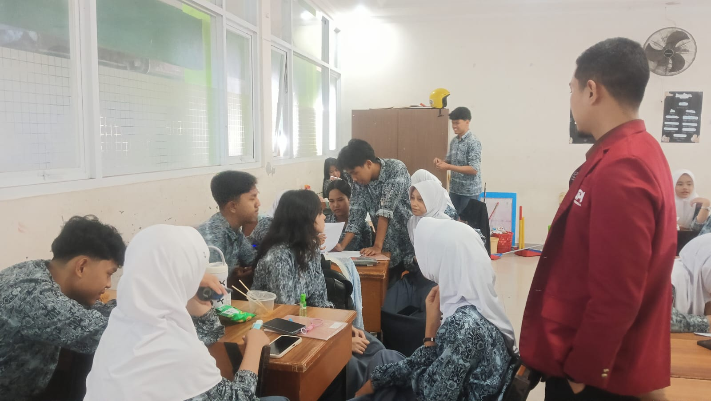
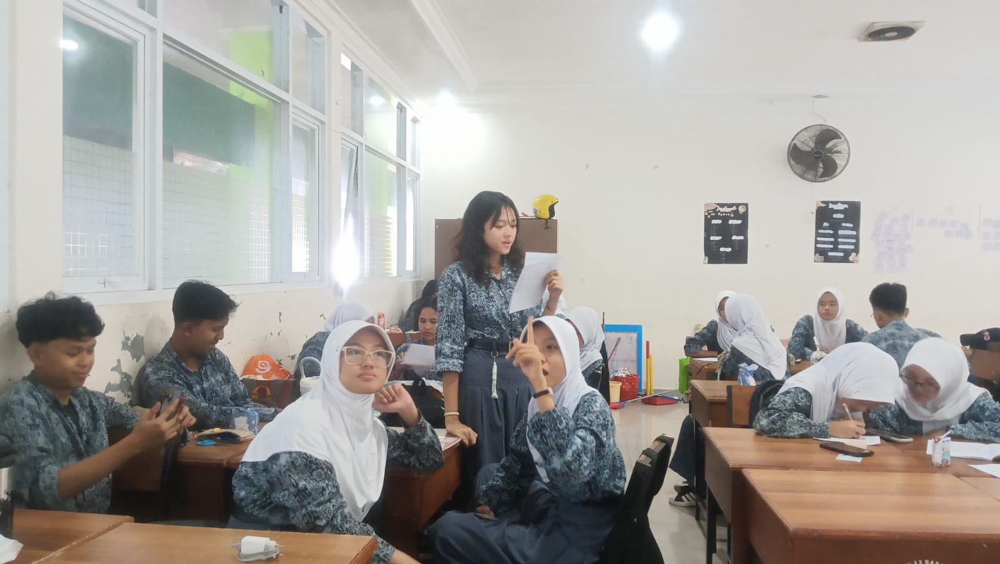
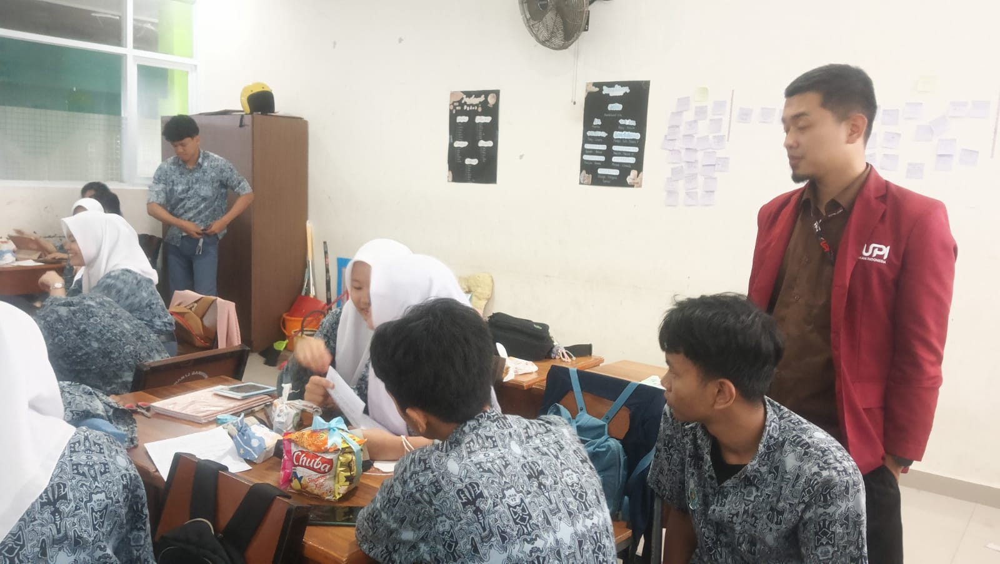

Analisis Pembelajaran: Siklus 3
Transformasi Strategi: Project Based Learning (PjBL)
Siklus ketiga menjadi puncak inovasi pembelajaran saya dengan menerapkan metode Project Based Learning (PjBL) melalui simulasi misi "Menyelamatkan Borneo". Fokus utama adalah menciptakan situated learning yang memberikan tanggung jawab personal kepada setiap murid dalam kelompok untuk menyelesaikan proyek berbasis data.
Dokumentasi Kegiatan



Hasil & Evaluasi
| Indikator | Analisis Hasil |
|---|---|
| Partisipasi Murid | Transformasi signifikan; struktur proyek memaksa setiap anggota kelompok memiliki peran aktif, menekan kepasifan seminimal mungkin[cite: 268]. |
| Respon Murid | Murid menunjukkan antusiasme konsisten karena merasa memiliki tanggung jawab personal atas kesuksesan proyek. |
| Tantangan | Kompleksitas pengelolaan kelas saat kolaborasi intensif, memerlukan manajemen kelas yang lebih adaptif agar kebisingan tetap produktif. |
Rencana Pengayaan & Diferensiasi
Berdasarkan masukan Guru Pamong, ke depannya saya akan menerapkan diferensiasi produk. Murid akan diberikan kebebasan untuk mempresentasikan solusi proyek dalam berbagai format (digital atau infografis manual) untuk mengakomodasi keberagaman bakat dan minat.